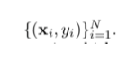
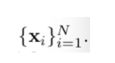
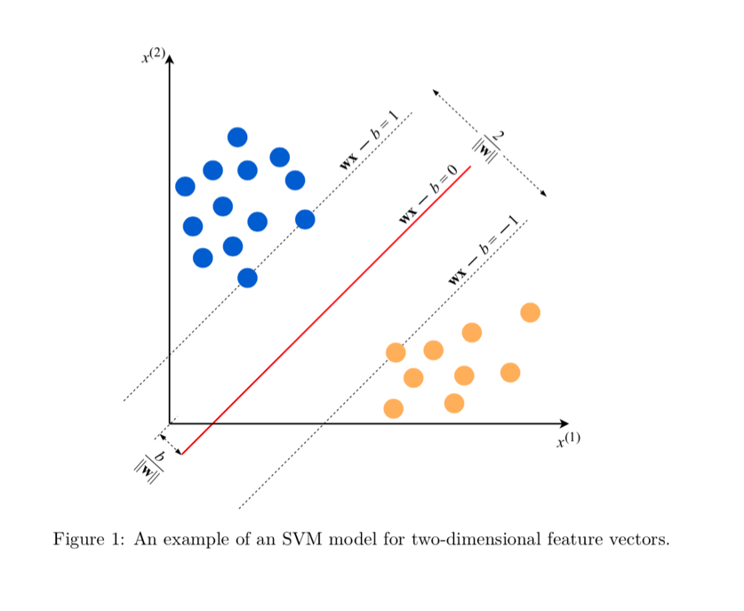

Machine Learning
Chapter 1 - Introduction
Learning => supervised, semi-supervised, unsupervised and reinforcement
-
Goal: Use the dataset to train a model which can predict the label based on a given feature.
-
Dataset <- labelled examples,

-
Each x is a feature vector //input, which describe the example, each y is a label// output
-
Usually when writing programs D::=number of features, N::=number of the sample.
-
The same thing using unlabeled dataset.

-
Either transform x into another vector, or into a value that can be used.
-
Uses both labelled and unlabeled data.
-
Hopes that unlabeled can help to train a better model.
-
Learns policy(function) in an environment
-
Explores not only how to find solutions but also what are the things that can be explored
-
How to get from x to y is not defined
A demo of supervised learning
-
In pairs (x,y) // x could be anything, but y are usually real numbers, for predicting (for computer convenience) or labels (spam, not_spam, etc.), or vectors
-
Requires the positive labels to be +1 and negative labels to be -1.
-
Prediction function y=wx-b
-
w ::= a real-valued vector of the same dimensionality as x.
-
b ::= adjustment
-
The goal of SVM: To find optimal w and b.
-
Also try to maximize the MARGIN (to make the boundary conditions more clear).
